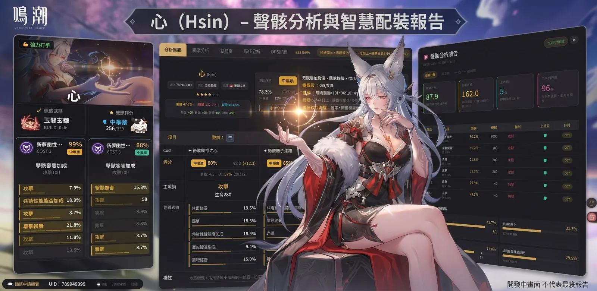
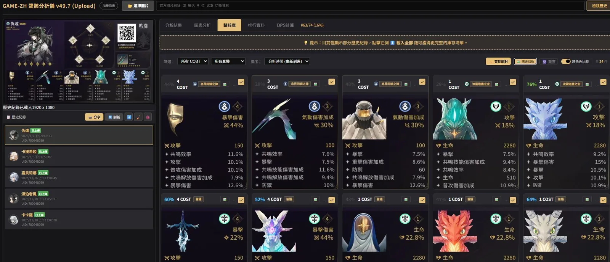
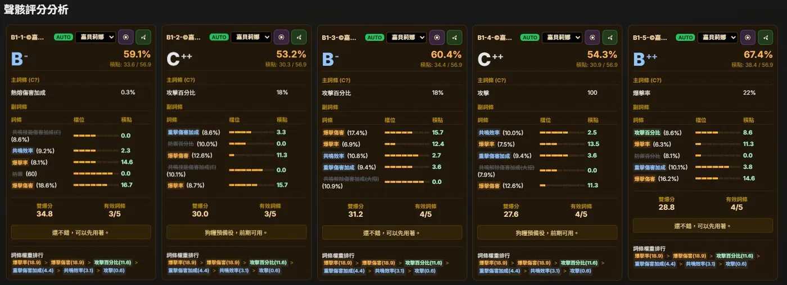
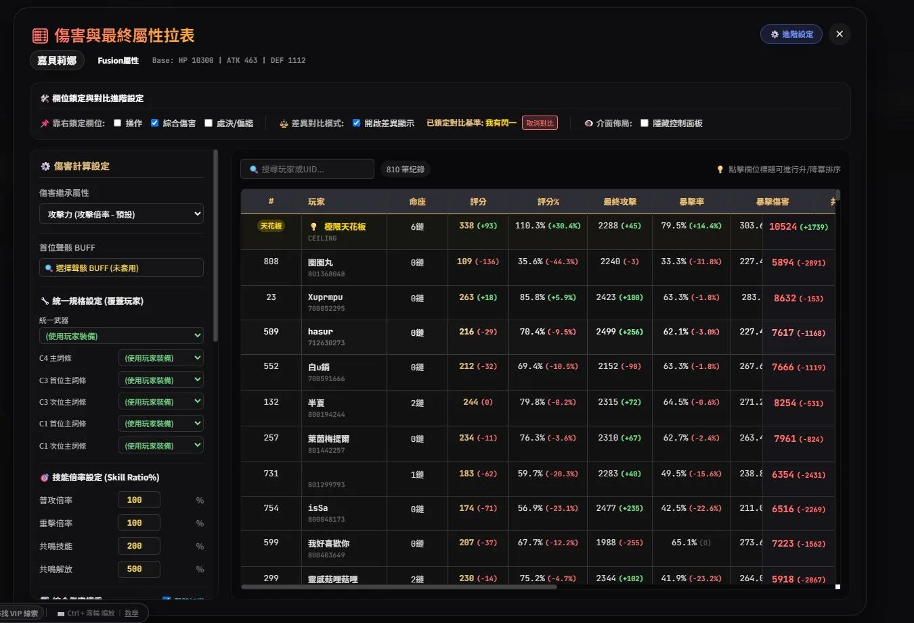
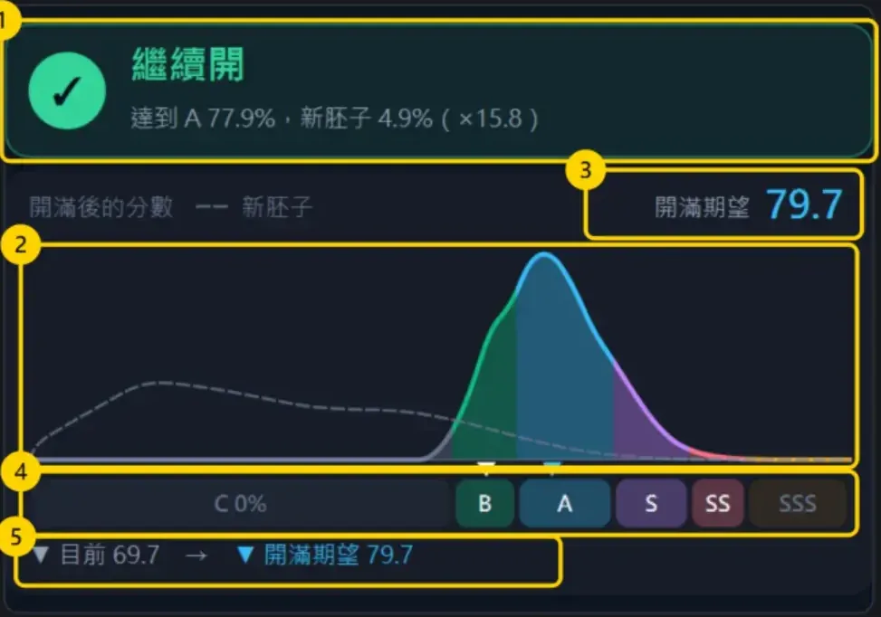

鳴潮玩家工具箱 · FAN-MADE
養聲骸，少走冤枉路。
GAMEZH 是玩家自製的鳴潮工具，分成兩種用法：網頁上幫整隻角色做健檢，或是電腦上邊玩邊幫聲骸打分。全部免費。
目前離線中。首頁可以開，但工具需要網路才能使用。

最近使用
02 / A · 聲骸分析儀
一張角色卡，
一張角色卡，
整隻角色健檢完
從官方 DC 機器人拿角色資訊卡圖片，丟進來幾秒就分析完。手機也能用。
- 自動辨識詞條：內建校正，減少截圖品質造成的認錯。
- CV 暴擊潛能：自動算出暴率×2＋暴傷，知道這套暴擊有多強。
- 聲骸排行榜：看自己在伺服器排第幾，順便抄大佬作業。
- 雲端歷史紀錄：輸入 UID 就能載入過去分析過的資料。




03 / B · 聲骸評分 HUD
還沒開滿，
還沒開滿，
就看得到它開滿會落在哪
電腦版懸浮工具，刷聲骸不用再 Alt + Tab 切視窗算分數。
- 點一下就有分數：評分直接浮在遊戲畫面旁。
- 止損建議：直接告訴你繼續開，還是換胚。
- 開滿落點圖：照官方公開機率算，一張圖看出值不值得。
- 不改遊戲檔案：只看畫面，沒有巨集、不讀記憶體。

04 / 其他工具
順手用得到的
工具壞掉、數值不對？
直接寫下發生什麼事就好，不用填問卷。附截圖會更快找到問題。
關於 GAMEZH
給鳴潮（Wuthering Waves）玩家的免費工具
GAMEZH 是玩家自製的鳴潮輔助工具，從玩家回饋一條一條改出來，累積超過 7 萬筆聲骸數據。
- 聲骸分析儀：上傳官方角色資訊卡就能做角色健檢，聲骸評分、CV 值、配裝建議、DPS 試算與聲骸排行榜，手機也能用。
- 聲骸評分 HUD：電腦版懸浮工具，點一下聲骸就顯示評分、止損建議和開滿落點。
- 累充 CP 值計算：規劃累充與月卡，算出每一抽的成本，並模擬抽卡結果。
- 網頁版即時評分：不用安裝，用電腦瀏覽器分享遊戲畫面，邊玩邊看聲骸分數。